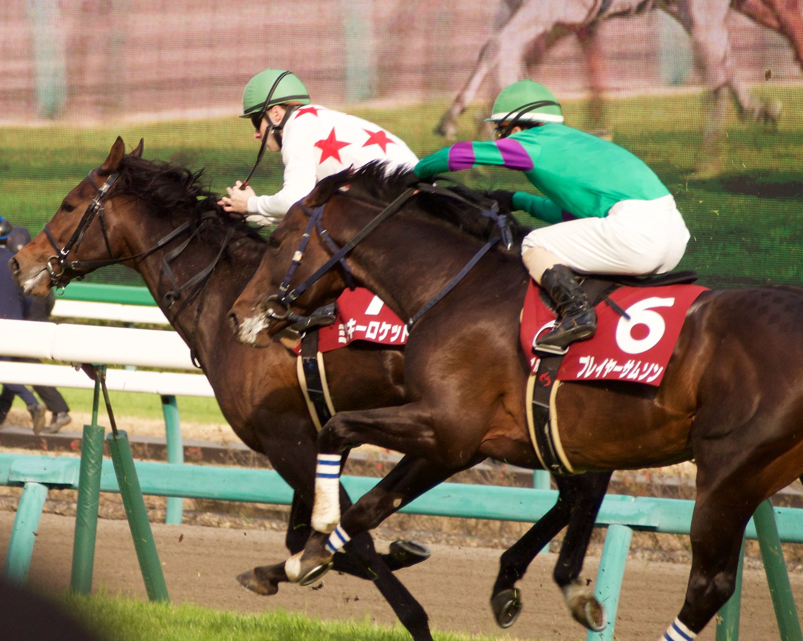

Conor Whiteley, suspendido 27 días por su cuarta infracción con la fusta en seis meses
El Disciplinary Panel de la BHA sancionó al jockey por el uso de la fusta sobre League of Justice en Newcastle; nueve de los días quedan en suspenso y uno se dedicará a formación.

CC BY-SA 2.0
El jockey Conor Whiteley ha sido sancionado con 27 días de suspensión por el uso de la fusta cuando montaba a LEAGUE OF JUSTICE (USA) en Newcastle el 5 de septiembre de 2026. Whiteley admitió la infracción de la Regla (F)45 del código de carreras británico, y el caso se resolvió por el procedimiento abreviado (fast-track) del Disciplinary Panel.
De los 27 días, nueve quedan en suspenso durante seis meses o 200 montas. Uno de los días de sanción deberá dedicarlo a formación específica para jockeys.
La dureza de la pena se explica por la reincidencia. Es la cuarta vez en los últimos seis meses que Whiteley supera el nivel permitido en el uso de la fusta.
La British Horseracing Authority (BHA) comunicó la resolución el 5 de octubre. El Disciplinary Panel forma parte del BHA Judicial Panel, un organismo independiente que incluye también el Appeal Board y el Licensing Committee. Recibe apoyo administrativo de la BHA a través del Judicial Panel Executive.
Resolución oficial completa · Información sobre el procedimiento fast-track
— Redacción de Galope al Día